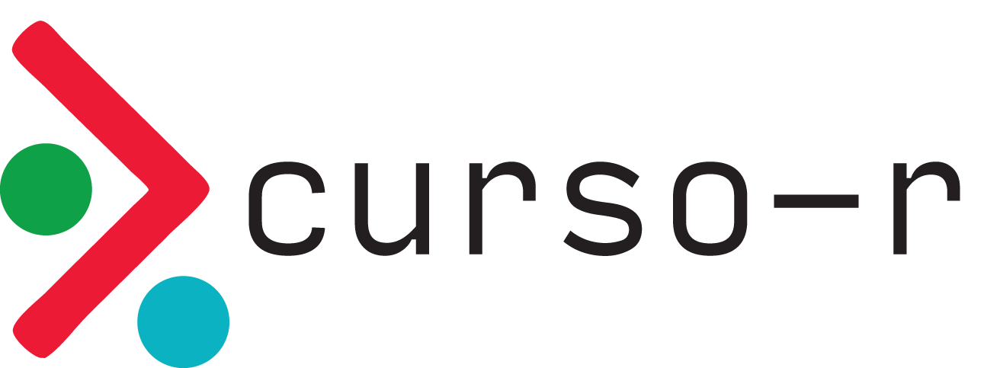
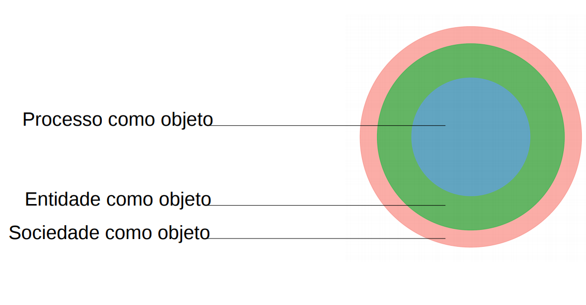
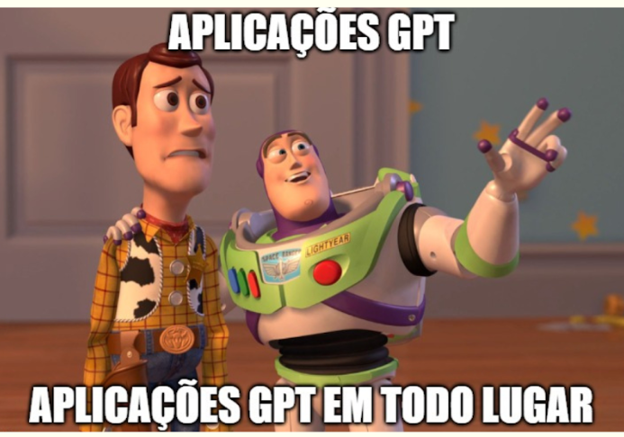

15 anos de jurimetria
Conceitos, Trajetória e Perspectivas
Julio Trecenti
Doutor em estatística pelo IME-USP

|
Professor TP no Insper |
| Diretor na Associação Brasileira de Jurimetria | |

|
Sócio na Terranova Consultoria |

|
Pesquisador em Jurimetria no CEOE-Unifesp |
|
 |
Sócio na Curso-R |
Conceitos
O que é jurimetria?
Jurimetria é a aplicação da estatística no direito. Ela é usada para descobrir regras jurídicas a partir das marcas que o Direito deixa na sociedade.

Tipos de aplicações

Obs: separar as coisas em tipos não é tão útil quanto parece.
Fazendo jurimetria
Jurimetria é a estatística aplicada ao direito.
Fazer jurimetria é pensar o direito de forma concreta, colocando nosso objeto de estudo no tempo e no espaço.
A jurimetria complementa o estudo clássico do direito, considerando leis, princípios jurídicos e pensamentos abstratos como hipóteses que se manifestam ou não na realidade através das decisões judiciais.
Estudo clássico
Princípios jurídicos e pensamento de especialistas sobre o valor de indenização por dano moral a ser concedido no contexto de direito do consumidor.
Estudo jurimétrico
Valores típicos de dano moral em sentenças de primeira instância de processos envolvendo direito do consumidor no Tribunal de Justiça de São Paulo em 2020.
Quem usa?
A jurimetria auxilia e complementa os trabalhos de todas as pessoas que atuam no universo do direito.
Advocacia e empresas
- Estatística como tecnologia para arguição.
- Análise de risco, due diligence e provisionamento.
Juristas
- Pareceres jurimétricos.
- Análise da lei na ótica concreta.
Magistrados
- Melhores práticas para administração judiciária.
- Aprimoramento das decisões a partir da análise dos dados.
Legislativo
- Estudo quantitativo de leis.
- Análise do impacto regulatório.
Trajetória
Linha do tempo
- 2010: graduação em estatística: primeiro contato. Tudo era mato!
- 2012: finalização do primeiro projeto
- 2013: experiências internacionais, congressos (CELS)
- 2014: empresa privada, projetos de jurimetria, projeto das câmaras
- 2016: mestrado em estatística, pesquisa das varas empresariais
- 2017: pesquisa dos maiores litigantes
- 2018: observatórios, drogas
- 2020: pandemia, Datajud
- 2021: entrada no Insper, novos contatos
- 2022: ChatGPT e TCU
- 2023: finalização doutorado, pós doutorado
- 2024: ciência de dados no direito, organização CELS
- 2025: juscraper, pesquisa com PGE
Perspectivas
Um mundo novo
As aplicações de GPT aparecem todos os dias. Alguns exemplos:
- Extração de informações
- Análise de jurisprudência
- Geração de textos

O que são LLMs?
LLMs (em inglês Large Language Models) são modelos de aprendizado de máquina treinados para entender e gerar texto humano.
Os LLMs são modelos generativos: eles aprendem a prever a próxima palavra de uma frase, dada uma sequência de palavras anteriores. Isso permite que eles sejam usados para gerar textos, códigos, etc.
Exemplo de uso
Se quiser acessar o código, entre aqui:
Muitos problemas
A aplicação de LLMs é nova e possui diversos problemas e limitações. Vamos ver apenas alguns:
- Qualidade dos resultados
- Análise de grandes documentos
- Privacidade e LGPD
- Código fechado
- Pressão do mercado
- Riscos de tomar decisões automatizadas
Por onde começar?
Aprenda estatística com seriedade!
Estude com amigos, forme grupos e fale com seus professores.
Aprenda a programar! É importante saber programar para saber o que pedir para IA.
Compartilhe conhecimento. Ensinar é a melhor forma de aprender!
Jurimetria: Temos um livro sendo escrito: https://livro.abj.org.br
IA: Sugiro começar pelos cursos da https://deepLearning.ai.
Obrigado!
2025